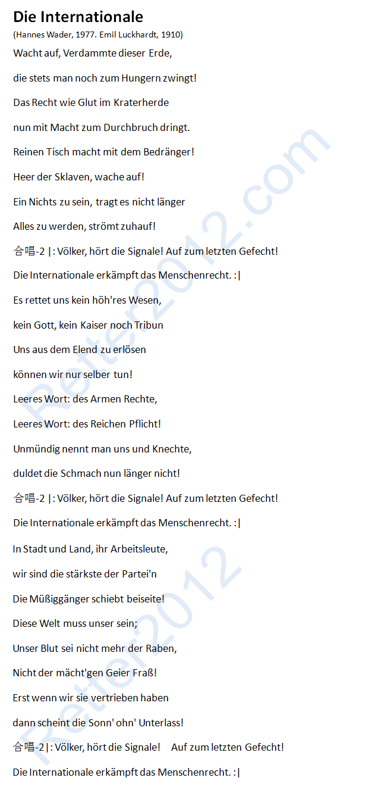

返回主页
歌曲：《国际歌》（Die Internationale）

唐朝乐队的摇滚版《国际歌》也非常棒，适合用来学习汉语。另外，还有解放军《军歌》和黑豹乐队的《无地自容》也不错。
1876年4月15日李鸿章派遣7名武兵留德，蒋介石曾两次自学德语。
朱德、外交部长乔冠华、北大校长蔡元培、历史学家陈寅恪与傅斯年、生物物理学家贝时璋、德语文学学者冯至、东方文化学者季羡林、核物理专家王淦昌、桥梁工程专家李国豪、外科专家裘法祖、现任中国科学院院长路甬祥、科技部长万钢。
想挑战？诗：Natur und Kunst （von Goethe）
一生中只追求完美
version:1.0; jobnet@188.com © retter2012.com